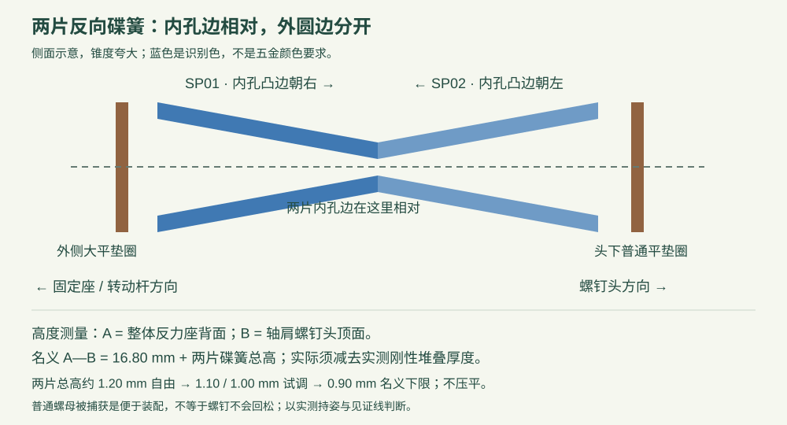

POSEDOLL LAB / 2026-10-24 / 新 H 样件
旧 H 已报告持姿不足；本版仍待实测。这是新的机械样件，H2-01 / H2-02 / H2-03 不能与旧 H01～H08 混装。先测肘部 0.040 N·m，再尝试肩部 0.130 N·m；达不到就记录为未通过。
| 工程 | 内容 | 切片估时 / PLA | 文件 |
|---|---|---|---|
| P0，可先试配 | H2-C01 孔与螺母试配片 | 34分34秒 / 4.37 g | 3MF · 盘位图 |
| P1，完整新H | H2-01、H2-02、H2-03，各1 | 2小时11分11秒 / 20.34 g | 3MF · 盘位图 |
A1 mini / PLA / 0.4 mm喷嘴 / 0.12 mm层高 / 5圈墙 / 100%填充。已离线切片，未发送打印任务。估时包括机器准备；实际耗时以设备为准。
轴肩螺钉Φ4×8 / M3螺纹长6：1颗；A8碟簧：2片。其余为现有M3普通螺母、M3×12螺钉与平垫圈。特别核对反力垫必须是O22的 9×3.2×0.8，不能拿T1的小垫圈代替。
完整参数与朝向五金清单 CSV
先把普通螺母装进止转后盖，再合到整体基座；从正面依次叠装大垫圈、转动杆、大垫圈、反向碟簧、普通垫圈和轴肩螺钉。渐进调整，不拧到压平。
4种碟簧高度、844个姿态的刚体干涉检查通过；装入路径、接触链、螺纹啮合、直杆工具和两个打印盘已检查。尚未证明实物强度、保持力、防松和耐磨。